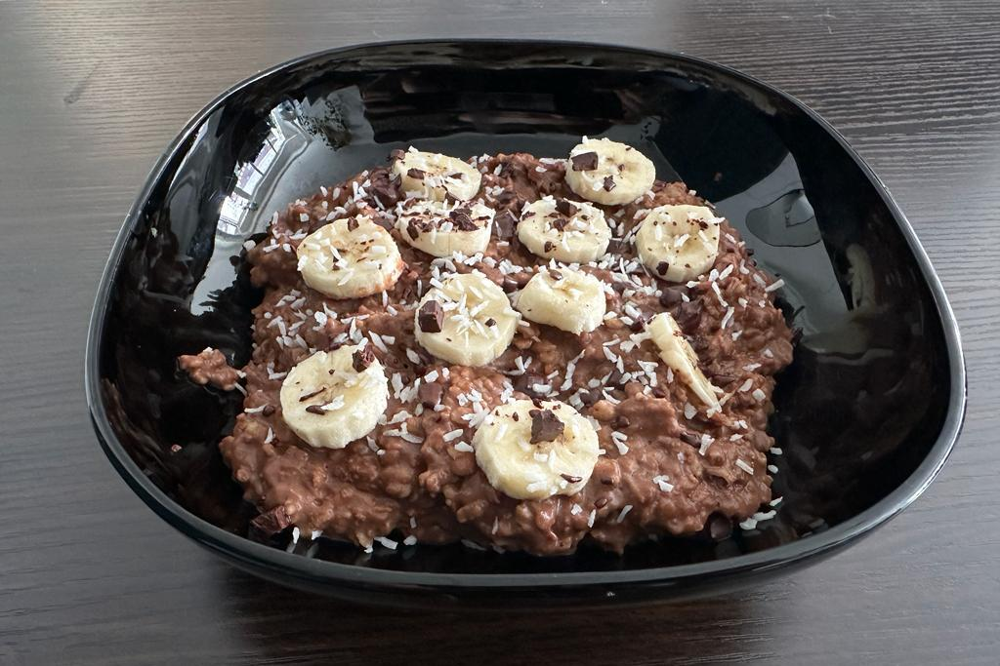

Ingredients - 2 Servings
- 120g oats
- 600ml unsweetened soy milk
- 2 bananas mashed
- 2 tbsp (13g) Cocoa Poweder heavily deoiled
- 2 tsp agave syrup
- 2 tbsp tahini
- 1/2 tsp vanilla extract
- 1/2 tsp cinnamon
- 1 pinch of salt
- 1 banana sliced (topping)
- dark chocolate bits (topping)
- coconut flakes (topping)
Instructions
- Add the oats and milk to a saucepan, bring to a boil then reduce the heat and let simmer for 10 - 15 minutes
- Add everything else to the saucepan and mix it well
- Remove it from the heat and split the porridge up into two bowls
- Top it off with banana slices, dark chocolate bits and coconut flakes